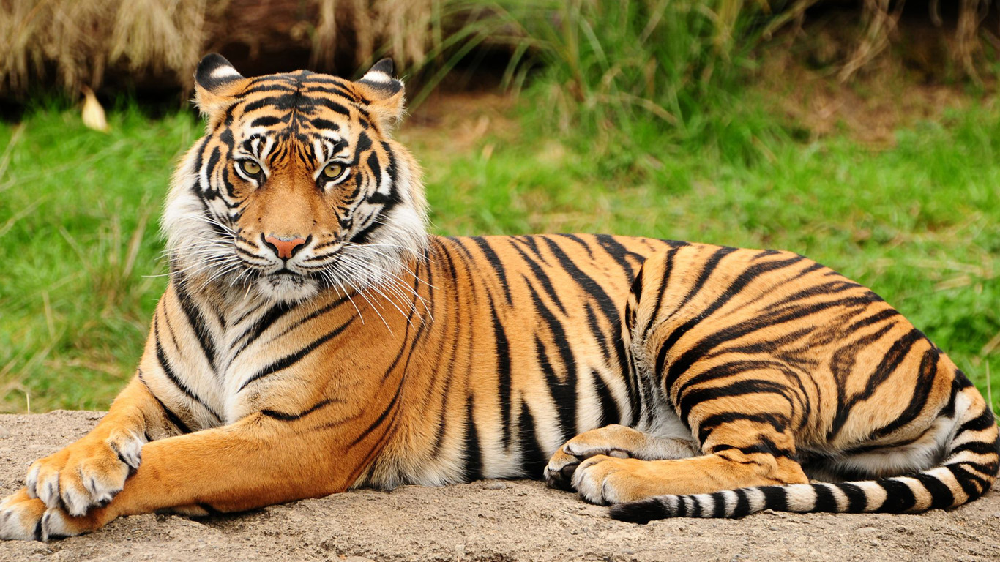

Тигр

Тигр — вид хищных млекопитающих семейства кошачьих, один из четырёх представителей рода пантера, который относится к подсемейству больших кошек.
Бурый медведь
Бу́рый медведь, или обыкновенный медведь — хищное млекопитающее семейства медвежьих; один из самых крупных наземных хищников.
Белый медведь
Бе́лый медве́дь, или полярный медведь, северный медведь, ошкуй, нанук, умка — хищное млекопитающее семейства медвежьих, близкий родственник бурого медведя. Крупнейший сухопутный хищник планеты.
Большая панда
Больша́я па́нда, или бамбу́ковый медве́дь — вид млекопитающих из семейства медвежьих со своеобразной чёрно-белой окраской шерсти, обладающих некоторыми признаками енотов. Единственный современный вид рода Ailuropus подсемейства Ailuropodinae.
Зебра
Зе́бры — подрод рода лошади, включающий виды бурчеллова зебра, зебра Греви и горная зебра. Гибридные формы между зебрами и домашними лошадьми называют зеброидами, между зебрами и ослами — зебрулами.
Волк
Волк, или серый волк, или обыкнове́нный волк — вид хищных млекопитающих из семейства псовых. Наряду с койотом и шакалом составляет небольшой род волков.
Коала
Коа́ла — вид сумчатых, обитающий в Австралии. Единственный современный представитель семейства коаловых из отряда двурезцовых сумчатых.
Кенгуру
Кенгуру — общеупотребительное название группы животных из отряда двурезцовых сумчатых млекопитающих. В широком смысле термин кенгуру относится ко всем представителям семейства кенгуровых.
Лев
Лев — вид хищных млекопитающих, один из четырёх представителей рода пантер, относящегося к подсемейству больших кошек в составе семейства кошачьих
Рысь
Ры́си — род хищных млекопитающих семейства кошачьих, наиболее близкий к роду собственно кошек. К нему относятся несколько кошек средних размеров: Обыкновенная рысь Канадская рысь; некоторые источники считают её подвидом обыкновенной рыси
^